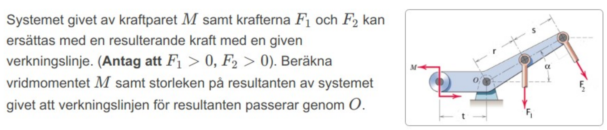
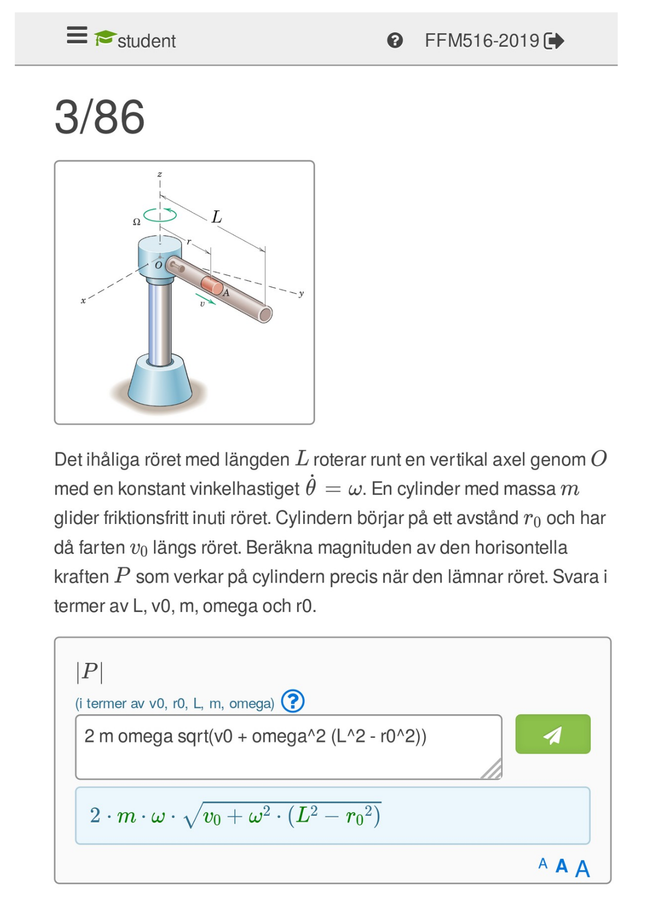
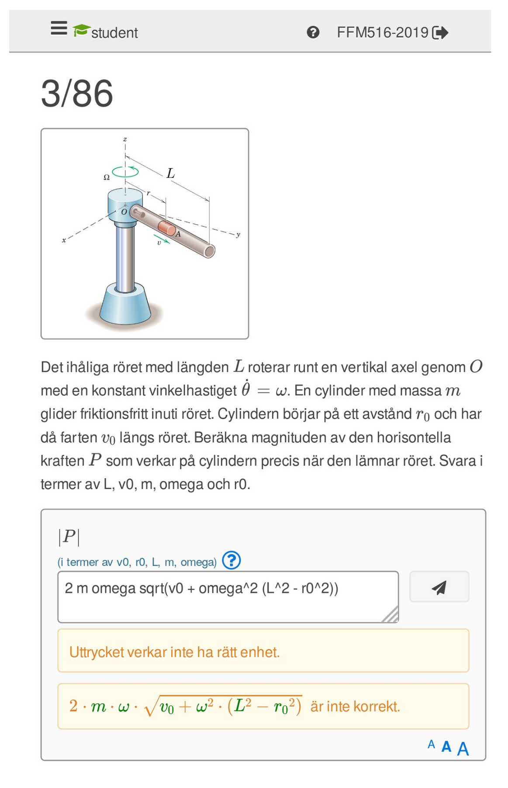
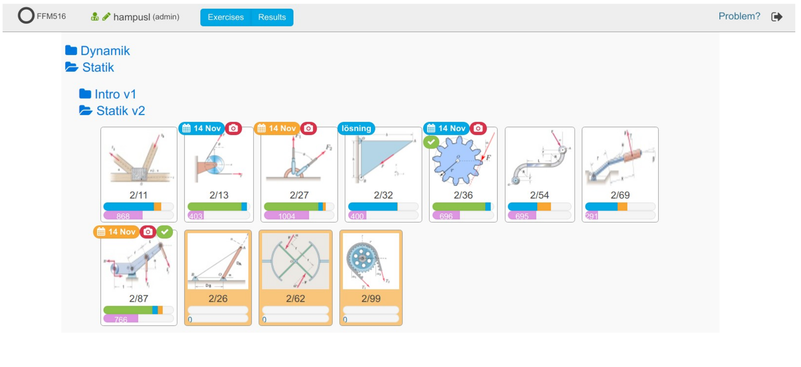

Introduction
Click on the link below to download this section as a slide presentation:
Goals
E-learning system for questions with symbolic answers.
Effective user interface for students and teachers on computer, tablet or smartphone.
More effective feedback between teacher and student.
Exercises
In a physics class, exercises typically involve some practical problem to be solved. Often analytically. A typical question from the earliest part of the mechanics course as presented in OpenTA is given in the following figure.
{kind=link}
The difficulty in evaluating a student’s answer to this is that there are many equivalent responses that are correct and acceptable. An auto correcting system must accept all correct answers.
The form of a correct answer may vary as follows:
This is the challenge which is surprisingly difficult to meet. The goal is therefore an exercise teaching platform that can properly evaluate mathematical content in questions, not only the usual numerical and multiple choice answers that are used as quizzes in many teaching platform.
The goal is to make the exercises fun and instructive for the students, and allow them to use the tools that they use every day. I.e. the platform should be adaptable: usable not only on laptops but should be usable on tablets and smartphones.


User interface
We first take a look at how a student sees the platform in our Mek1 course. First a login screen. In fact a launch in Canvas can also be used.

After logging into OpenTA, folders with assignments are shown. In this case some icons that indicate which problems are to be solved. Some icons have embellishments that are discussed below.
The following example comes from the Chalmers course in introductory mechanics.

The student selects a problem and is presented with several questions to be answered and an answer box in which to type the answer.

The variables that are permitted in the answer are indicated and the answer is entered in a natural AsciiMath syntax. The program typesets the input during input, which is not only useful for checking more complex formulas, but is also fun since the input looks quite a bit more elegant than the AsciiMath input form.
{kind=link}
The student attempts the answer by pressing the Send button.
In this case, the answer was not only incorrect but the units were wrong. OpenTA points out in the response.
{kind=link}
On the next attempt, the student enters in the correct answer and gets a correct response back.

The examiner can demand not only that the input answer is correct, but can indicate that the student should upload their calculations that led to the answer. In that case a camera icon is shown and either an image or a PDF file is uploaded by the student to complete the exercise.

A thumbnail of the upload is then shown.

The slides presented above show OpenTA on a laptop screen, but the smartphone format is sufficiently easy to use that many of the students use that instead of a laptop. And, the uploads can be done directly from the smartphone’s camera.

Progress Tracking
The following slide shows what a student’s OpenTA page, from the Neural Networks course Bernhard Mehlig is teaching, might look like after a week or two.
We note now the embellishments on the icons. Questions are categorized
as Obligatory (blue) , Bonus (orange) or Optional (no
badge).

Due dates are listed, and green check mark indicates the answer was correct, and a green or red camera icon indicates an image was uploaded or missing.

Teacher View
The teacher sees essentially the same view as the student, but with some more badges on the exercise icon.
{kind=link}
There are violet activity bars indicating how many student attempts there are on the particular question, green bar indicating how many have answered correctly and turned in their image, a blue bar indicating how many students have answered correctly, and an orange bar indicating how many students have tried but failed to answer the question.
The violet activity bar can be set to measure all activity, activity latest week, day or hour. Thus a teacher can see not only cumulative student progress but which questions are being worked on at at the time.

Recently submitted answers can also be read, and not only the latest, but also all of the attempts made by the student to answer the question. The teacher can thereby find out common mistakes that students might be making.

More detail about a particular exercise is available. The time that submissions were made, typically hitting a peak just before deadline.

Late submissions are never rejected, they are always just marked late so the teacher has an option to accept them if they are feeling generous.
The examiner can also audit the student responses. I.e. go through the student answers and uploads and override the automatic settings generated by the computer. We typically use this as spot-checks on the student submissions. In the next slide, a student submission is shown together with comments to be transmitted to the student.

An exercise is accepted on the basis of a correct answer and a submitted image unless there is intervention by an audit by TA or teacher. Several TA’s can share the task of auditing exercises.
The follwing image show what a grade sheet for a student. It shows how a student has performed and the number of questions that have been completed.

A teacher can also examine a student’s work by entering OpenTA as that student. This is useful if an individual is having difficulties with either the physics or the OpenTA technology.

Technical Information
The OpenTA client, i.e. where the screen shots come from, is a desktop app written in JavaScript using React.
The OpenTA server is based on Django, a framework based on Python version 3.
All packages are OpenSource.
Canvas and Moodle can be configured to use OpenTA as a tool.

OpenTA is designed as a learning tool, not as an examination tool. We encourage collaboration and trying answers multiple times.
Thus, we have not limited the number of responses and make no attempts to lock down access to other media. We do find, however that students work very hard for Bonus points and that has turned out to be an important motivation for the students to take the exercises seriously.
The opinions from both teachers and students who have used OpenTA has been overwhelmingly positive.